Geografía
615 recursos de Geografía en español, sin preparación y con solucionario: fichas de lectura, búsquedas del tesoro y más, filtrables por grado.
615 recursos
Grado

«Secretos del parque nacional» – Búsqueda del tesoro de lectura

«Viajes por mares desconocidos» – Búsqueda del tesoro de lectura

Wels – Ficha de lectura: texto con huecos, comprensión auditiva y sopa de letras

Walhalla – Ficha de lectura: texto con huecos, comprensión auditiva y sopa de letras

Viena – Ficha de lectura: texto con huecos, comprensión auditiva y sopa de letras
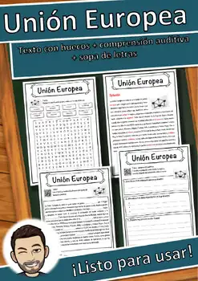
Unión Europea – Ficha de lectura: texto con huecos, comprensión auditiva y sopa de letras
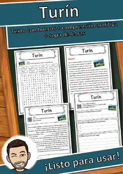
Turín – Ficha de lectura: texto con huecos, comprensión auditiva y sopa de letras
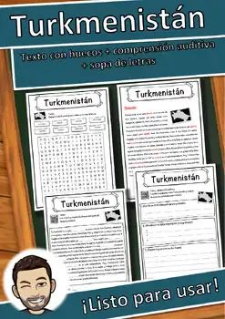
Turkmenistán – Ficha de lectura: texto con huecos, comprensión auditiva y sopa de letras
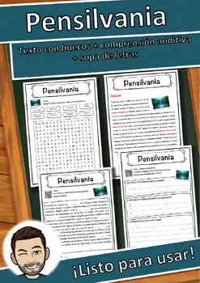
Pensilvania – Ficha de lectura: texto con huecos, comprensión auditiva y sopa de letras
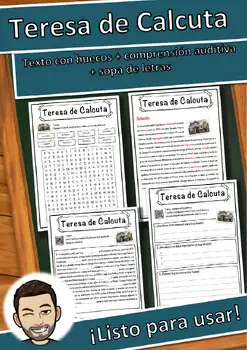
Teresa de Calcuta – Ficha de lectura: texto con huecos, comprensión auditiva y sopa de letras
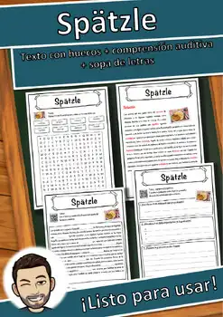
Spätzle – Ficha de lectura: texto con huecos, comprensión auditiva y sopa de letras
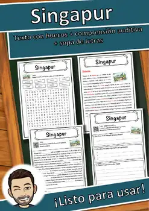
Singapur – Ficha de lectura: texto con huecos, comprensión auditiva y sopa de letras
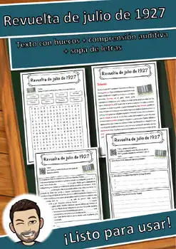
Revuelta de julio de 1927 – Ficha de lectura: texto con huecos, comprensión auditiva y sopa de letras
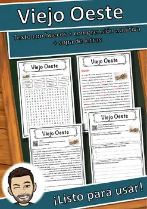
Viejo Oeste – Ficha de lectura: texto con huecos, comprensión auditiva y sopa de letras
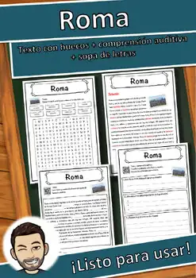
Roma – Ficha de lectura: texto con huecos, comprensión auditiva y sopa de letras
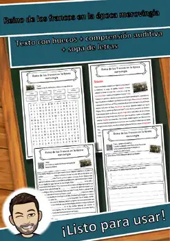
Reino de los francos en la época merovingia – Ficha de lectura: texto con huecos, comprensión auditiva y sopa de letras
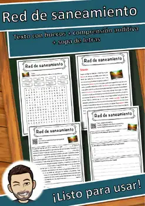
Red de saneamiento – Ficha de lectura: texto con huecos, comprensión auditiva y sopa de letras
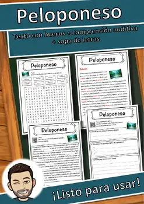
Peloponeso – Ficha de lectura: texto con huecos, comprensión auditiva y sopa de letras
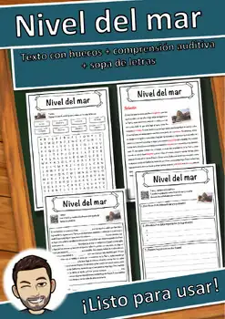
Nivel del mar – Ficha de lectura: texto con huecos, comprensión auditiva y sopa de letras
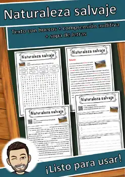
Naturaleza salvaje – Ficha de lectura: texto con huecos, comprensión auditiva y sopa de letras

Municipio – Ficha de lectura: texto con huecos, comprensión auditiva y sopa de letras
Montes Urales – Ficha de lectura: texto con huecos, comprensión auditiva y sopa de letras
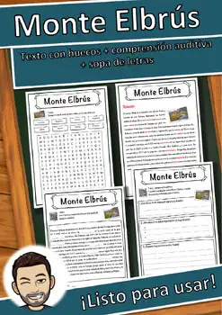
Monte Elbrús – Ficha de lectura: texto con huecos, comprensión auditiva y sopa de letras
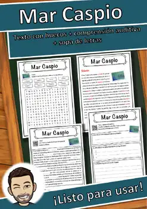
Mar Caspio – Ficha de lectura: texto con huecos, comprensión auditiva y sopa de letras
Servicio de inteligencia – Ficha de lectura: texto con huecos, comprensión auditiva y sopa de letras
Linz – Ficha de lectura: texto con huecos, comprensión auditiva y sopa de letras
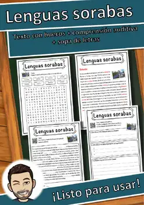
Lenguas sorabas – Ficha de lectura: texto con huecos, comprensión auditiva y sopa de letras

Lago de Garda – Ficha de lectura: texto con huecos, comprensión auditiva y sopa de letras

Iglesia libre – Ficha de lectura: texto con huecos, comprensión auditiva y sopa de letras

Idioma portugués – Ficha de lectura: texto con huecos, comprensión auditiva y sopa de letras

Idioma húngaro – Ficha de lectura: texto con huecos, comprensión auditiva y sopa de letras

Idioma bajo alemán – Ficha de lectura: texto con huecos, comprensión auditiva y sopa de letras

Idioma alemán – Ficha de lectura: texto con huecos, comprensión auditiva y sopa de letras

Gymnasium – Ficha de lectura: texto con huecos, comprensión auditiva y sopa de letras

Fiyi – Ficha de lectura: texto con huecos, comprensión auditiva y sopa de letras

Finlandia – Ficha de lectura: texto con huecos, comprensión auditiva y sopa de letras

Exilio – Ficha de lectura: texto con huecos, comprensión auditiva y sopa de letras

Esch-sur-Alzette – Ficha de lectura: texto con huecos, comprensión auditiva y sopa de letras
Distritos de Alemania – Ficha de lectura: texto con huecos, comprensión auditiva y sopa de letras
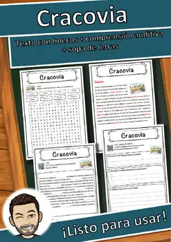
Cracovia – Ficha de lectura: texto con huecos, comprensión auditiva y sopa de letras
Cartago – Ficha de lectura: texto con huecos, comprensión auditiva y sopa de letras
Camboya – Ficha de lectura: texto con huecos, comprensión auditiva y sopa de letras
Río de Janeiro – Ficha de lectura: texto con huecos, comprensión auditiva y sopa de letras
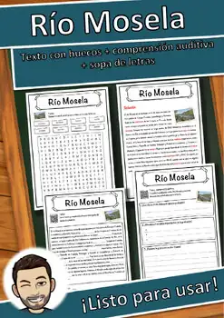
Río Mosela – Ficha de lectura: texto con huecos, comprensión auditiva y sopa de letras
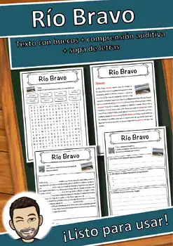
Río Bravo – Ficha de lectura: texto con huecos, comprensión auditiva y sopa de letras
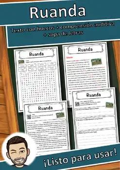
Ruanda – Ficha de lectura: texto con huecos, comprensión auditiva y sopa de letras
Baja Austria – Ficha de lectura: texto con huecos, comprensión auditiva y sopa de letras
Alfred Escher – Ficha de lectura: texto con huecos, comprensión auditiva y sopa de letras
No se encontraron recursos. Prueba con otra palabra o con otro filtro.